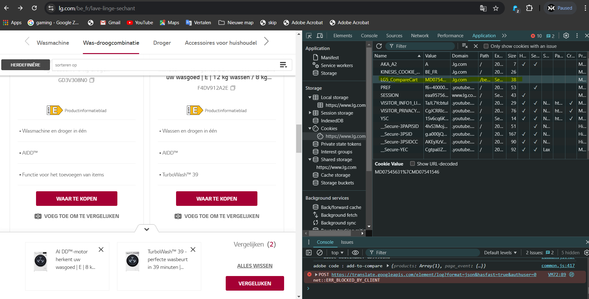

Bij het vergelijken van toestellen op de LG-website, wordt de informatie over welke toestellen je hebt aangevinkt bewaard in de Local Storage of Session Storage. Dit zorgt ervoor dat je toestellen kunt vergelijken, zelfs als je naar andere pagina's navigeert.
Wanneer je de Chrome Developer Tools opent, kun je in de Application tab kijken welke gegevens worden opgeslagen in Local Storage of cookies. De identifiers van de geselecteerde toestellen worden hier opgeslagen, waardoor de webapplicatie kan onthouden welke modellen zijn aangevinkt voor vergelijking.
